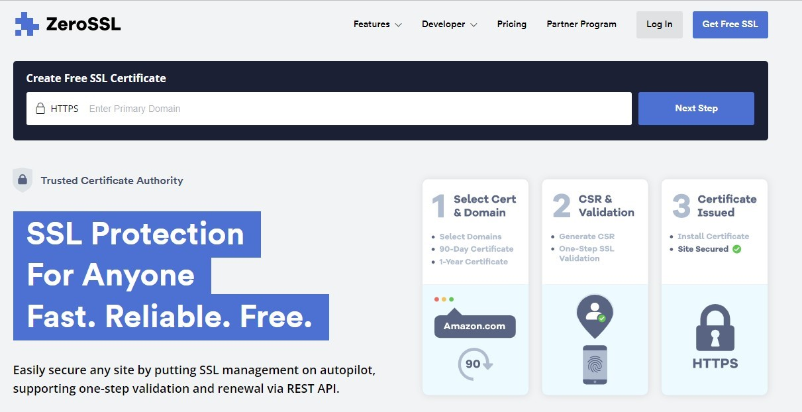
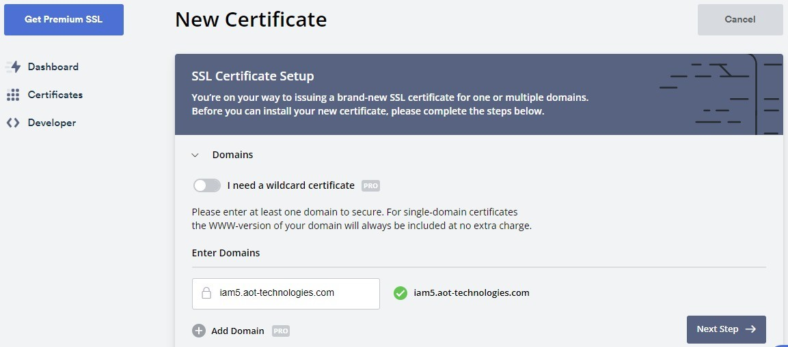
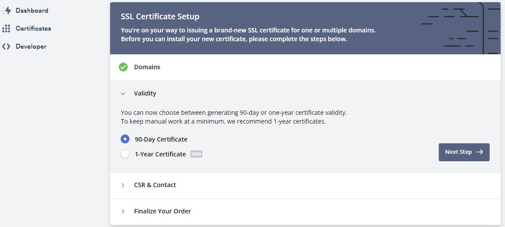
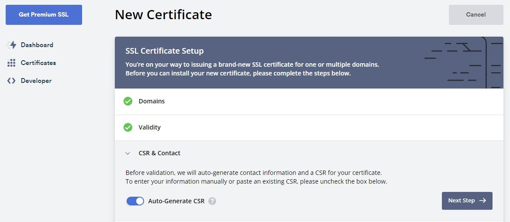
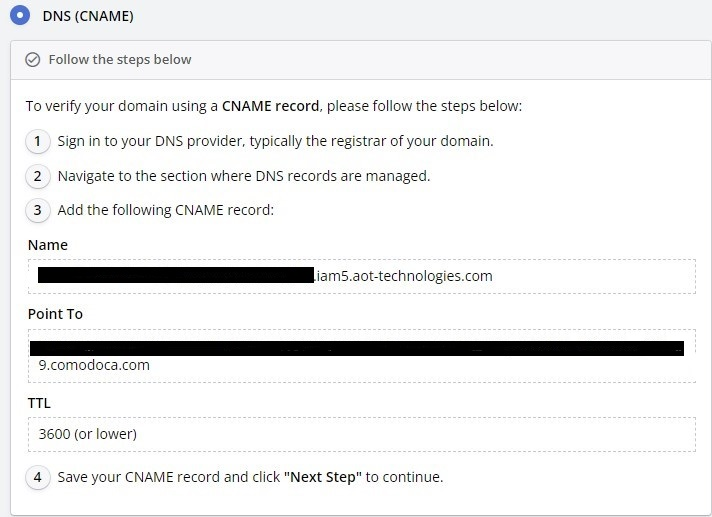

<article class="docs-article" id="section-1">
    <section class="docs-section" id="item-1-1">

        <h1>Hosting keycloak and formsflow.ai in server using nginx with ssl</h1><br>
        <hr>
        <ul>
            <li><h3>Phase I :</h3></li>
            <p><strong> Purchase ssl for the domain name (both for identity management system and
                formsflow.ai)</strong></p>
            <h5>Step 1:-</h5>
            <p>Purchase ssl from a trusted entity or can use letsencrypt to create a new ssl. We purchased ssl from
                zerossl as a 3 month free tier basis.</p><br>
            <br><br>
            <br><br>
            <br><br>
            <br><br>
            <p>In the next window, we can see a free 90 days certificate is already selected along with other purchase
                options. Click next and continue with the process.</p>
            <p>Next, we need to complete the validation of the certificate, for that select DNS validation from the
                given window and create a CNAME record in your domain with given values.</p>
            <br><br>
            <p>After the validation, click next and download the zip file of the certificate. The zip file contains one
                private key, one certificate file and one bundle file.</p>
        
            <h5>Step 2:-</h5>
            <p>Open a blank notepad file and copy the content from the file <strong> certificate.crt</strong> and paste
                it into the
                notepad file, in the same file also paste the content from <strong>ca_bundle.crt</strong> file following
                the content of
                the certificate.crt and save the notepad file as <strong>cert.pem</strong>.</p>
            <p>Copy the <strong>cert.pem</strong> file and <strong>private.key</strong>, and paste it into the folder
                where we are going to configure the Nginx docker.</p>
            <p>Here we are having two domains, one for identity management and the other for formsflow.ai, so we are
                having two cert.pem files and two private.key files</p>
            <li><h3>Phase II:</h3></li>
            <p><strong>This step should do after deploying all the forms-flow components in server.</strong></p>
            <p>Setting up identity management server, forms flow app, analytics server, and mapping the domain.</p>
            <p>Inside the folder <code> forms-flow-nginx</code>, create three folders with domain names of keycloak,
                app, and analytics.</p>
            <p>Consider your domain name is <strong>example.com</strong>, then you have to purchase three SSL for three domains,
                keycloak.example.com, app.example.com, and analytics.example.com (domain can decide according to your
                wish)</p>
                <p>Copy the <strong>private.key</strong> and <strong>cert.pem</strong> files of their corresponding directories with domain name There will be a shell script file named '<code> runme.sh</code>' , you can run that file using the command <code>$ bash runme.sh</code>.</p>
                <p>After running this command , nginx container will up and we can use the public ip of the server for further use.</p>
                <p>Create A record in your DNS server with each domain names and value of that A record will be that public IP.</p>
        

        </ul>

    </section>